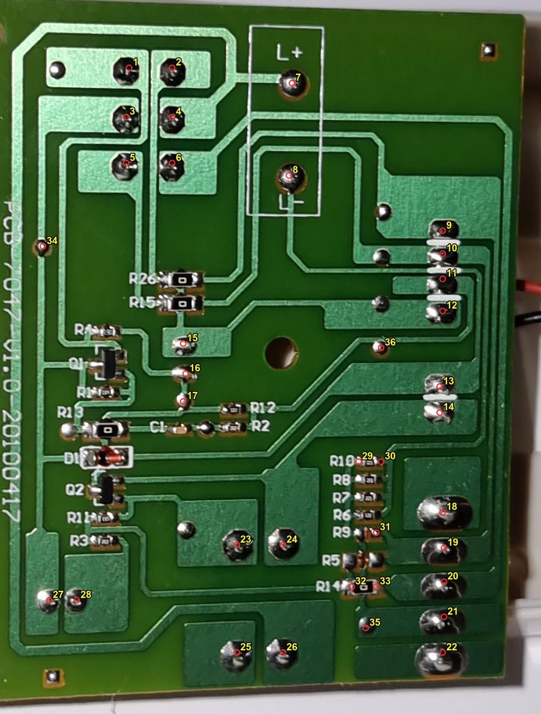

СтройМастер Домофоны, board PCB-7047-V1.0-20100417, built 2017-09-04. It's a two-wire handset for coordinate (Vizit-type) door systems, with no chips: two S8050 transistors, one diode, a hook switch and a dozen passives. Every connection was traced from photos of the single-sided board and checked against meter readings. Numbers in [brackets] are pads on the photo further down.
Red labels are net flags: two flags with the same name are the same wire. R13, R14, R15 and R26 are 0 Ω links on 4-way option pads; the factory uses them to rewire the board for other systems.
D1 passes only the positive line into the RAIL. The hook switch ties N6 to LINE −, so the only load is LED1 + R3 (2 kΩ). Idle line was ~1.2 V, below the LED's threshold, so it stays dark.
The panel raises the line voltage on your apartment's pair, LED1 lights through R3, and the call tone is sent down the same two wires.
SW1 puts the earpiece between Q1's emitter and N6. Current flows Q1 → earpiece → R11 → Q2 base, so Q2 turns on and closes the main loop Q1 → R4 → Q2. The mic modulates Q1's base through R2 and C1; incoming audio drives the earpiece.
SW3 shorts Q2's base to LINE −. Q2 switches off and the loop current drops, which the panel reads as "open". That matches the Vizit passport: the lock opens only if the button is pressed during a conversation.
In position "0" SW2 puts 55 Ω (four 220 Ω in parallel) across the line, so the call is quieter. Per the passport this also lowers the talk volume. Its NC and COM pins are tied together on the board, so only NO switches anything.
| Wire | Pad | Net |
|---|---|---|
| Line, red | [13] | LINE + (D1 anode, SW2 bank) |
| Line, black | [14] | LINE − (Q2 emitter, SW3, SW1) |
| Box pad "L−" | [8] | LINE + (silk is reversed) |
| Box pad "L+" | [7] | LINE − (silk is reversed) |
| Handset green | [9] | Earpiece − = mic + (one node) |
| Handset yellow | [10] | Earpiece + |
| Handset black | [11] | Mic − |
| Handset red | [12] | Mic + (same node as [9]) |

| Ref | Value | Role |
|---|---|---|
| D1 | LL4148-type (0.55 V) | Reverse-polarity protection, LINE + → RAIL |
| Q1, Q2 | S8050 NPN (SOT-23, "J3Y") | Q1 series pass + mic amp; Q2 off-hook loop and door-open switch |
| R1 | 100 kΩ | Q1 base bias from RAIL |
| R2 | 2 kΩ | Mic − → C1 → Q1 base |
| R3 | 2 kΩ | LED1 current limit |
| R4 | 560 Ω | Main loop, Q1 emitter → Q2 collector |
| R11 | 10 kΩ | Q2 base drive |
| R12 | 10 kΩ | Mic − → Q2 collector node |
| R6 R7 R8 R10 | 220 Ω each (55 Ω together) | SW2 call-volume shunt. R6 is fitted upside down, so it reads "122". |
| R13 R14 R15 R26 | 0 Ω | Option links |
| R5, R9 | not fitted | Option pads next to SW2 |
| C1 | ceramic, unmarked | Mic feed to Q1 base |
| E1 | 10 µF 50 V | Couples the earpiece/mic node to the Q2 collector node |
| LED1 | red, long legs | Call indicator, anode on RAIL |
| SW1 | HAIDU DPDT hook switch | Lifted: [1]–[5], [2]–[6]. On hook: [3]–[5], [4]–[6]. |
| SW2 | SPDT slide | Call volume, 1 = loud, 0 = quiet |
| SW3 | 12 mm tactile | Open door |